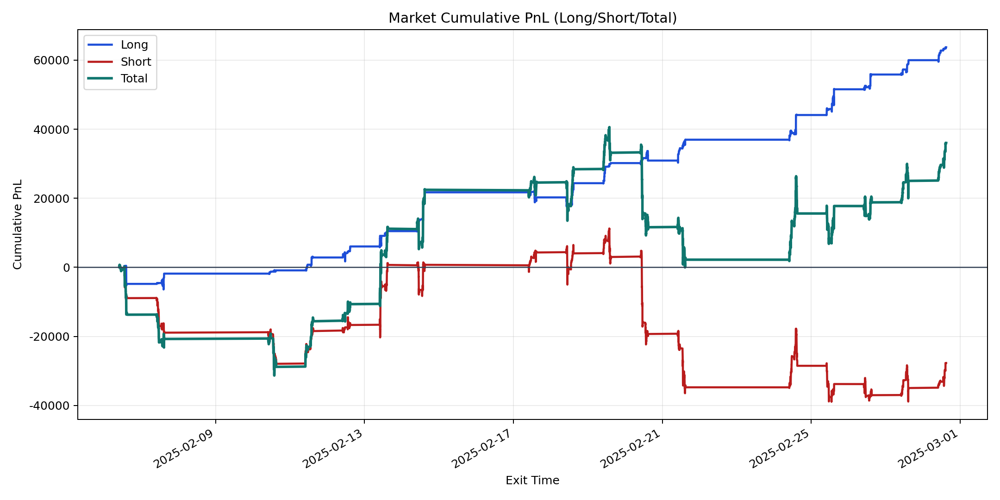
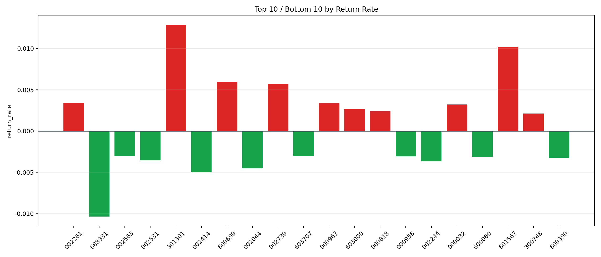

| repo_root | /home/haoranyou/data/output/alpha0.4_1w_5s_3ticks_index_filter/index_weights_500 |
|---|---|
| period_months | 1 |
| period_label | 2025-02-06_to_2025-02-28 |
| start_time | 2025-02-06 09:51:02 |
| end_time | 2025-02-28 15:00:00 |
| n_trades | 16786 |
| n_symbols | 72 |
| total_pnl | 36021.74830000024 |
| long_total_pnl | 63725.03645 |
| short_total_pnl | -27703.288149999757 |
| total_entry_notional | 152690675.0 |
| long_entry_notional | 38150830.0 |
| short_entry_notional | 114539845.0 |
| total_return_rate | 0.00023591321670429606 |
| long_return_rate | 0.001670344693680321 |
| short_return_rate | -0.0002418659476097576 |
| top_symbols_by_return | ["301301", "601567", "600699", "002739", "002261", "000967", "000032", "603000", "000818", "300748"] |
| bottom_symbols_by_return | ["688331", "002414", "002044", "002244", "002531", "600390", "600060", "000958", "002563", "603707"] |

